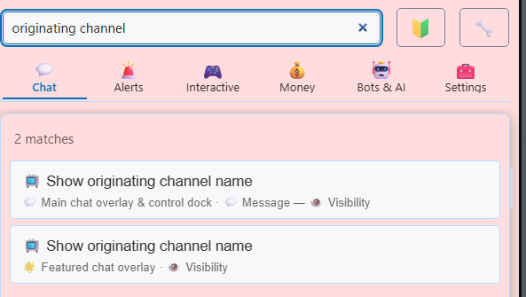
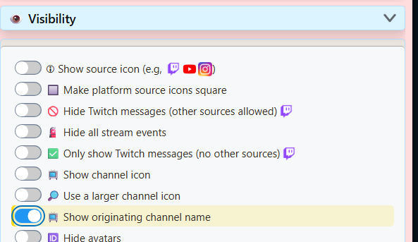

Which overlays support channel names?
The same viewer can comment on several streams. The channel label tells you which creator received the message, while the viewer's name still identifies who sent it. Select any screenshot to view it at full size.

| View | Supported? | Where to enable it |
|---|---|---|
| Main chat / control Dock | Yes | Main chat overlay & control dock ? Message ? Visibility |
| Queued messages in the Dock | Yes | Uses the same Dock setting; no separate queue toggle. |
| Rolling chat in OBS | Yes, with the main chat overlay (dock.html) | Use the updated Dock link in that Browser Source. |
| Featured Chat | Yes | Featured chat overlay ? Visibility; enable its own toggle. |
| Other overlays, including Multi-Alerts | This toggle is not available | Use the main chat or Featured Chat overlay when you need these channel labels. |
The toggle applies to ordinary messages, Super Chats, memberships, and gifts displayed in these views. It labels all messages with an available channel name; there is no paid-items-only switch.
Show channel names in chat and the queue
- Open your Social Stream Ninja settings in the desktop app or browser extension.
- In the Chat tab, open Main chat overlay & control dock (Streaming Chat), then Message ? Visibility. If you are in beginner mode and cannot see this section, choose Switch to full mode in the welcome panel.
- Enable Show originating channel name. Or search settings for originating channel and select the result under Main chat overlay & control dock.
- Open the updated Streaming Chat Dock link. If you already have the Dock open in OBS or a browser, update its URL using the steps below.



The queue keeps the channel label
Queue messages as usual. The Dock's channel-name setting also applies when viewing queued items.

Show channel names on the Featured Chat overlay
- In the Chat tab, open Featured chat overlay, then Visibility.
- Enable Show originating channel name there as well.
- Copy the updated Featured Chat link into your OBS Browser Source's URL field.
- Select a message in the Dock to feature it. Its channel label appears on the overlay when a channel name is available.
The Dock and Featured Chat have separate settings. Enable both if you want your hosts and your audience to see channel names.



Update an existing browser or OBS link
You can enable channel names directly on an existing dock.html or featured.html link by adding &showchannelname. Keep your existing session, password, and other options.
https://socialstream.ninja/dock.html?session=YOUR_SESSION_ID&showchannelname
https://socialstream.ninja/featured.html?session=YOUR_SESSION_ID&showchannelnameThese are examples; use your own generated links. In OBS, edit the URL in the Browser Source or custom browser dock settings. In a browser, navigate to the updated URL. If your link contains a # fragment, insert &showchannelname before it.
Changing a toggle in SSN updates the generated link. Replace links you previously copied into OBS or saved as bookmarks to apply the option there.
If a channel name is missing
- Only one search result? Beginner mode can hide the main chat visibility section. Choose Switch to full mode, then search again. You can also use the URL option without changing menu modes.
- Check the exact option. Use Show originating channel name. Show source name as text next to icon shows the platform, such as YouTube, rather than the creator's channel.
- Check the page you are viewing. Its URL should contain
showchannelname. Updating the Dock does not update a separate Featured Chat Browser Source. - Check a new message. Channel details may still be loading when a source first opens. Wait for a new message from each connected channel, then queue or feature it to check the label.
- Check the source. YouTube capture supplies channel names. Other platforms can show labels when their source supplies a channel name. If only one source stays unlabeled, include the platform and capture mode when asking for help.
This option labels items already appearing in chat; it does not enable capture of additional events. If memberships or gifts are missing entirely, review your YouTube setup and event filters.